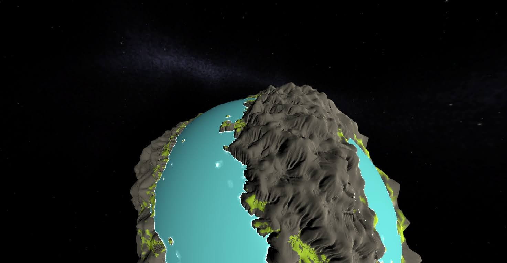
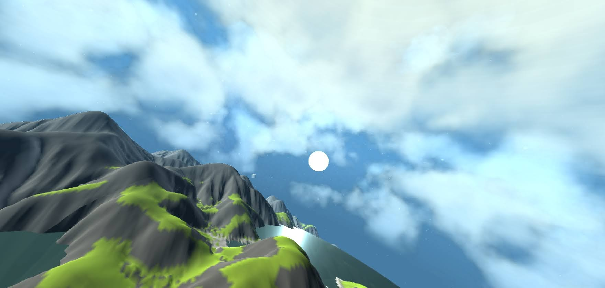

Procedurally Generated Planets
Features:- 3D procedurally generated hills and water using a combination of noise and simulating some simple rain / hydraulic erosion.
- Planet sphere is divided into different 'square' mesh chunks (i.e. the planet is really a cube, inflated into a sphere shape). Only appropriate visable chunks are rendered depending on camera position. Further away visable chunks are also rendered in less detail.
- I then later played around with volumetric raymarching shaders. I used some existing cloud rendering shader and adapted it into a more general 'sky' shader. This added blue / red colours depending on the sun position relative to the camera.
The rendering of different chunks at different details was a really fiddly but interesting problem. It was fun having this direct use for linear algebra (i.e. handling position vectors and calculating vector projections).
Code can be viewed here, but it's just a bunch of the scripts for future reference, not the whole Unity project. I remember it reaching a rather broken state where remaking the project would probably be better than trying to fix everything.
I was notably less experienced with programming when I worked on this 2 years ago. The code quickly became a complete mess as more and more was added. However there were interesting problems to solve, and there were really cool results along the way.
